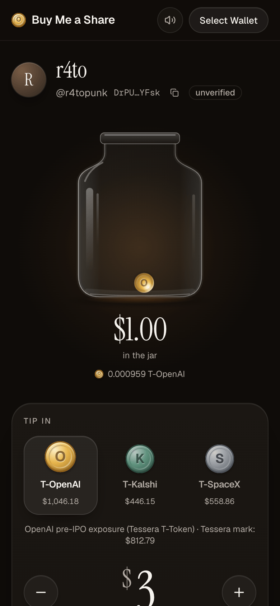
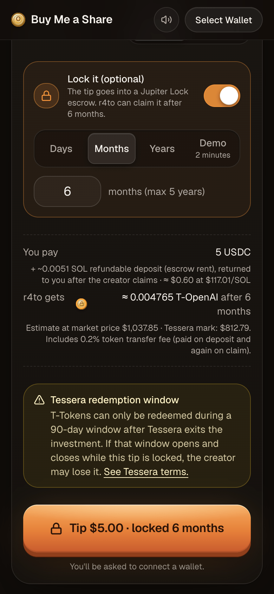
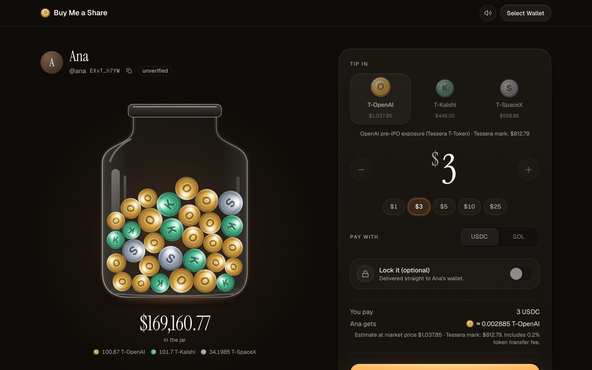
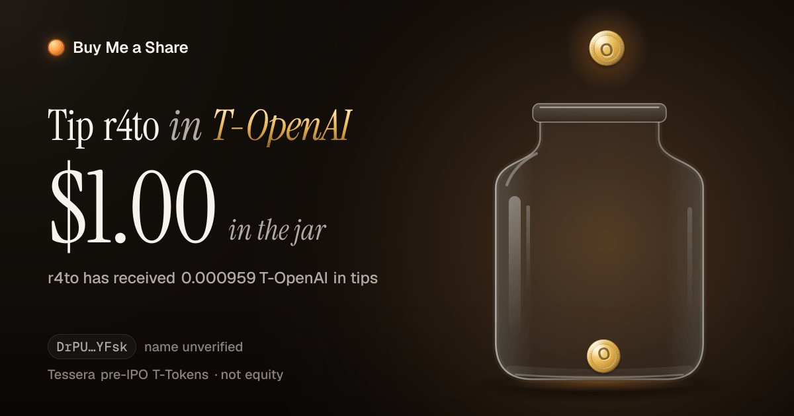

The app
Fresh screenshots of the dev build · mainnet data

Tip page
jar read from mainnet, token picker

Lock on
duration, deposit, Tessera warning
/tip/EXvT…h7YW?name=Ana&x=ana

Desktop
· a real holder's jar after a (demo) tip lands

Share card / Blink icon
·
/api/og
, one coin per tip